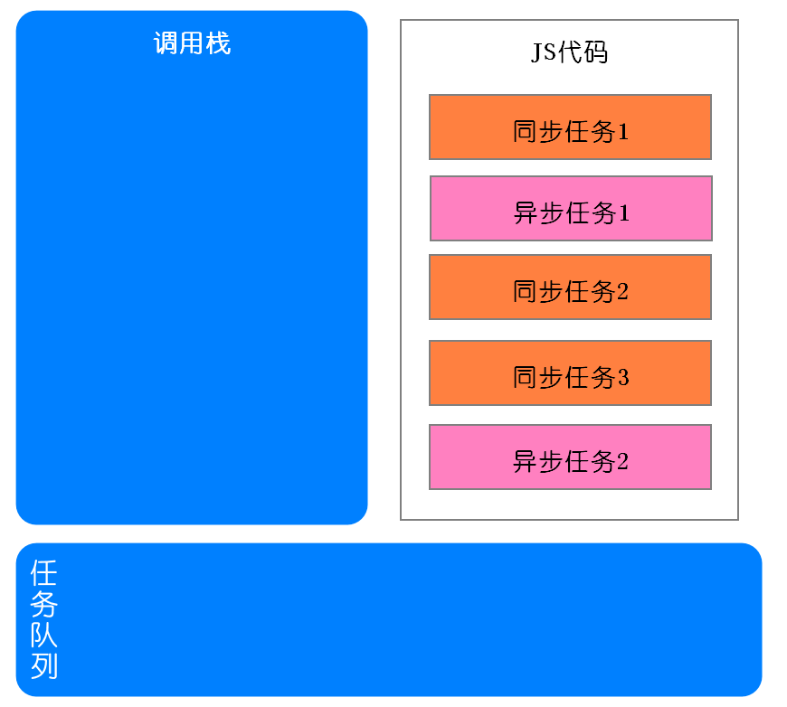
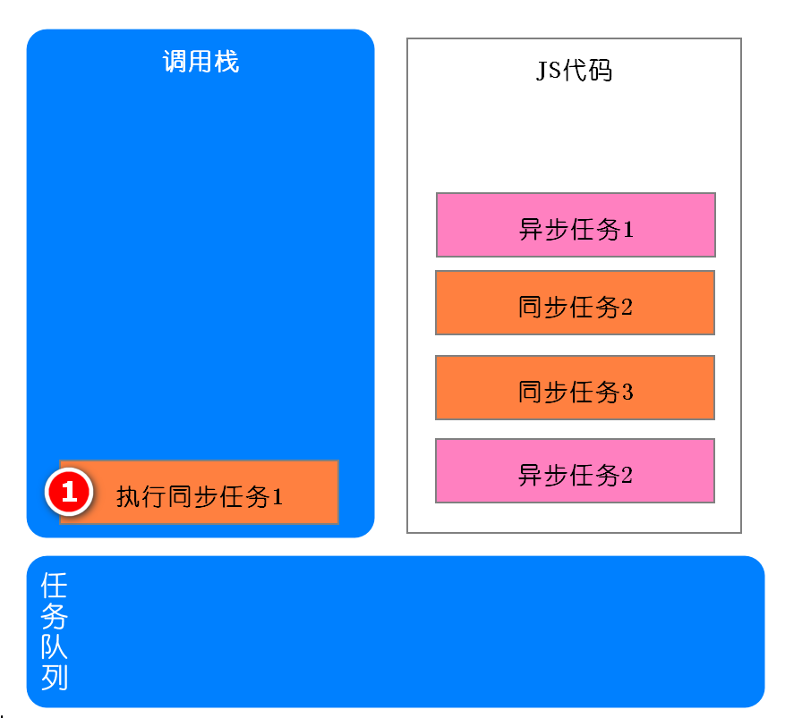
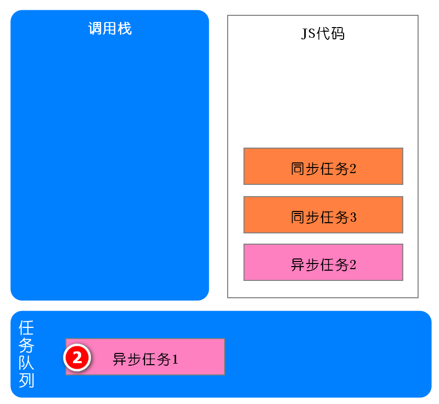
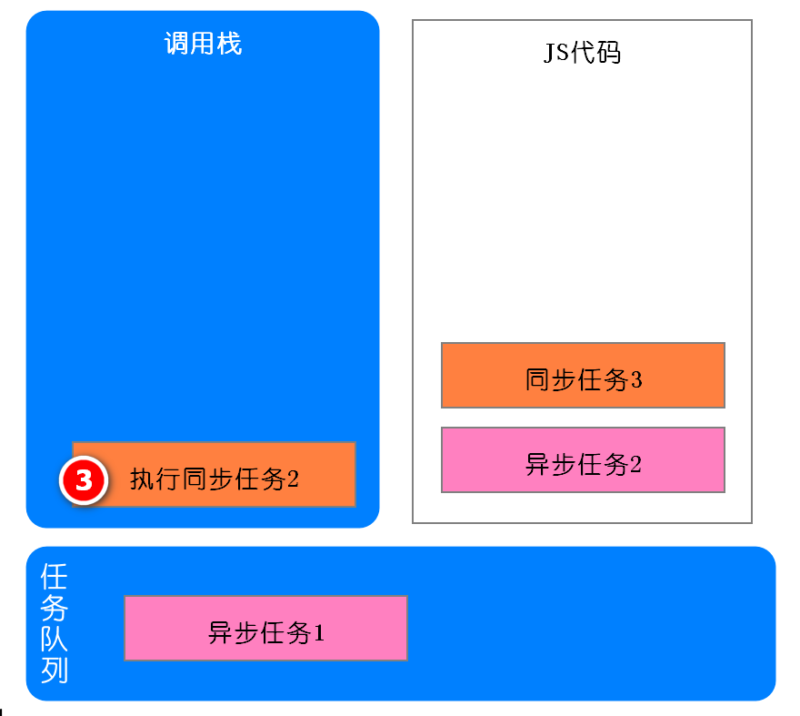
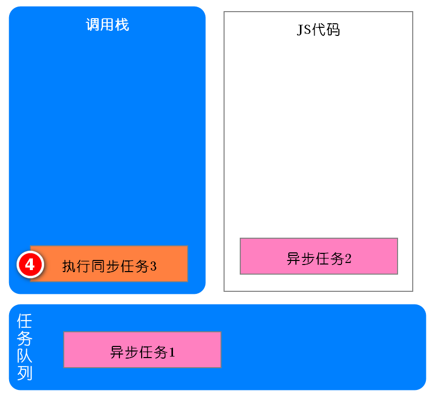
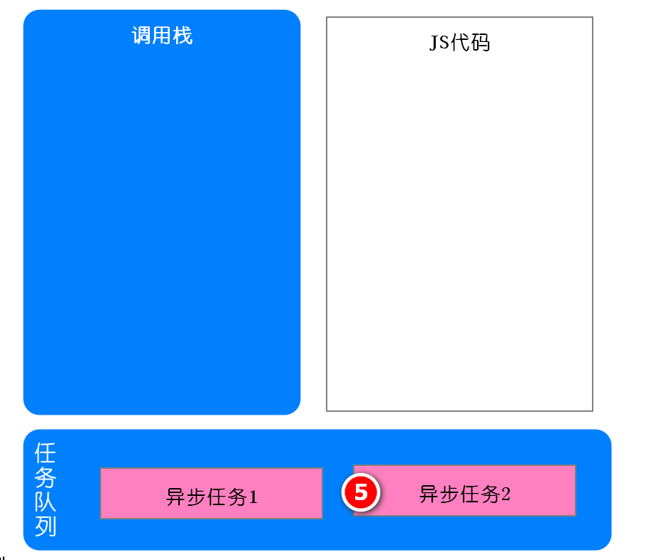
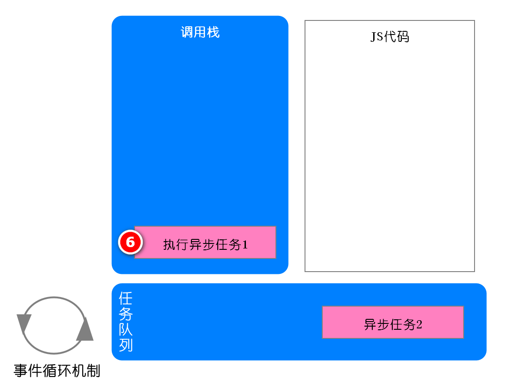
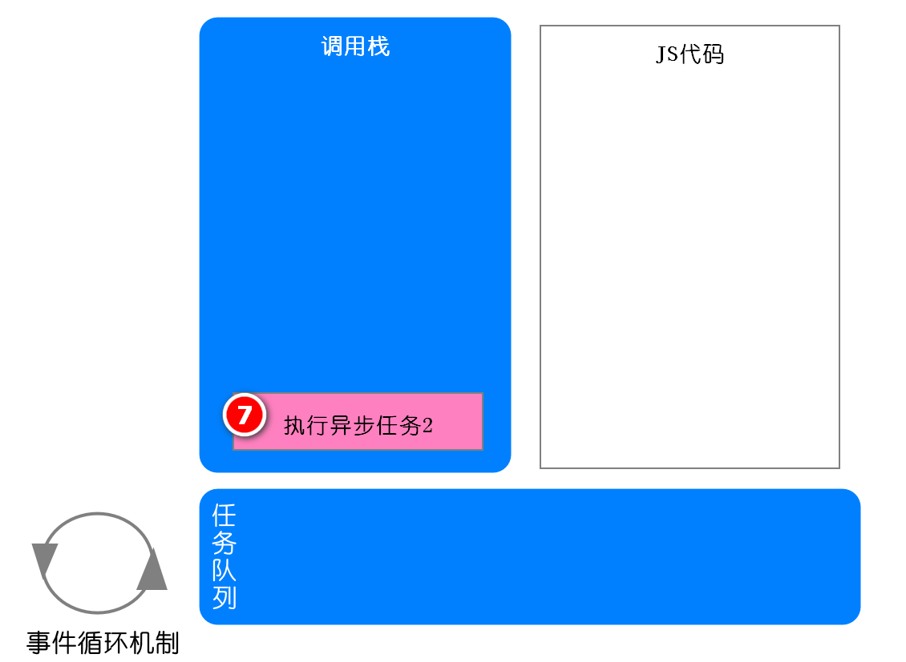
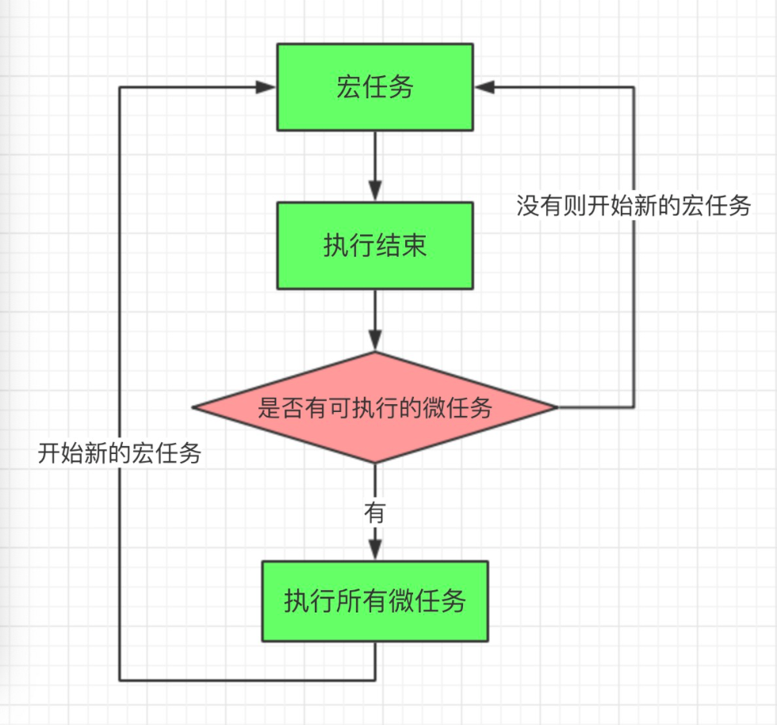
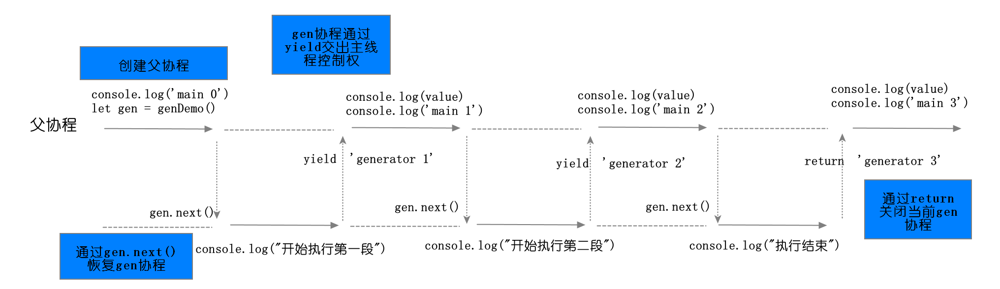

1. 什么是同步和异步 同步 ：函数执行结束立刻有返回值，函数后面的代码需要等待函数有返回值之后才能执行
1 2 3 4 5 6 function sum (a,b ) console .log(a+b) return a+b; } sum(1 ,2 ); console .log(1 );
异步 ：函数执行结束需要等待某个条件满足之后才有返回值，函数后面的代码无需等待函数有返回就能执行
1 2 3 4 setTimeout (function ( console .log(1 ) },1000 ) cosnole.log(2 )
1 2 3 4 5 var btn = docment.querySelector('button' );btn.onclick = function ( console .log(1 ) } console .log(2 )
2. javaScript中常用的异步操作
定时器 setInterval、settimeout
事件
ajax请求
promise
3. V8引擎如何实现异步 3.1 事件循环 执行js代码的时候，遇见同步任务，直接推入调用栈中执行，遇到异步任务，将该任务挂起，等到异步任务有返回之后推入到任务队列中，当调用栈中的所有同步任务全部执行完成，将任务队列中的任务按顺序一个一个的推入并执行








3.2 定时器 1 2 3 4 setTimeout (function ( console .log(1 ) },1000 ) cosnole.log(2 )
3.3 Dom事件 1 2 3 4 5 var btn = docment.querySelector('button' );btn.onclick = function ( console .log(1 ) } console .log(2 )
浏览器进程。 主要负责界面显示、用户交互、子进程管理，同时提供存储等功能。
渲染进程。 核心任务是将 HTML、CSS 和 JavaScript 转换为用户可以与之交互的网页，排版引擎 Blink 和 JavaScript 引擎 V8 都是运行在该进程中，默认情况下，Chrome 会为每个 Tab 标签创建一个渲染进程。出于安全考虑，渲染进程都是运行在沙箱模式下。
GPU 进程。 其实，Chrome 刚开始发布的时候是没有 GPU 进程的。而 GPU 的使用初衷是为了实现 3D CSS 的效果，只是随后网页、Chrome 的 UI 界面都选择采用 GPU 来绘制，这使得 GPU 成为浏览器普遍的需求。最后，Chrome 在其多进程架构上也引入了 GPU 进程。
网络进程。 主要负责页面的网络资源加载，之前是作为一个模块运行在浏览器进程里面的，直至最近才独立出来，成为一个单独的进程。
插件进程。 主要是负责插件的运行，因插件易崩溃，所以需要通过插件进程来隔离，以保证插件进程崩溃不会对浏览器和页面造成影响。
3.4 ajax请求 1 2 3 4 5 6 7 8 9 10 var xhr = new XMLHttpRequest();xhr.open('GET' , 'demo-data' , true ); xhr.send(); xhr.onreadystatechange = function (e ) if (xhr.readyState == 4 && xhr.status == 200 ) { console .log(xhr.responseText); console .log(2 ); } }; console .log(1 )
1 2 3 4 5 6 7 8 9 10 11 12 13 14 15 var a = 1 ;function sum (a,b ) console .log(1 ) return a+b; } sum(1 ,2 ); setTimeout (function ( console .log(2 ) },1000 ) cosnole.log(3 ) var btn = docment.querySelector('button' );btn.onclick = function ( console .log(1 ) } console .log(2 )
消息队列中的任务类型
内部消息类型：输入事件（鼠标滚动、点击、移动）、微任务、文件读写、WebSocket、定时器等。
与页面相关的事件：JavaScript执行、解析DOM、样式计算、布局、CSS动画等。
消息队列中的任务分成：

宏任务（macrotask）
微任务（microtask）
谁发起的
宿主（Node、浏览器）
JS引擎
具体事件
1. 执行script标签内部代码
1. Promise
3.5 Promise 1 2 3 4 5 6 7 8 9 setTimeout (()=> {console .log(3 )},0 )new Promise (function (resolve,reject ) console .log(1 ); resolve('fullied' ) }).then(function (data ) console .log(data) }) console .log(2 )
4. 详解回调地狱解决方案 4.1 异步回调问题 第一是嵌套调用 ，下面的任务依赖上个任务的请求结果，并在上个任务的回调函数内部执行新的业务逻辑，这样当嵌套层次多了之后，代码的可读性就变得非常差了。
第二是任务的不确定性 ，执行每个任务都有两种可能的结果（成功或者失败），所以体现在代码中就需要对每个任务的执行结果做两次判断，这种对每个任务都要进行一次额外的错误处理的方式，明显增加了代码的混乱程度
1 2 3 4 5 6 7 8 9 10 11 12 13 14 15 16 17 18 19 20 21 22 23 24 25 26 27 28 29 function ajax (request, resolve, reject ) var xhr = new XMLHttpRequest(); xhr.open(request.method, request.url, request.sync); xhr.send(); xhr.onreadystatechange = function (e ) if (xhr.readyState == 4 ) { if (xhr.status == 200 ) { resolve(xhr.response) } else { reject('error' ) } } }; } ajax({ method : 'GET' , url : '/1' , sync : true }, function (success ) console .log('success1:' + success) ajax({ method : 'GET' , url : '/2' , sync : true }, function (success ) console .log('success2:' + success) ajax({ method : 'GET' , url : '/3' , sync : true }, function (success ) console .log('success3:' + success) }, function (error ) console .log('error:' + error) }) }, function (error ) console .log('error:' + error) }) }, function (error ) console .log('error:' + error) })
4.2 promise解决问题 第一是消灭嵌套调用；
第二是合并多个任务的错误处理。
1 2 3 4 5 6 7 8 9 10 11 12 13 14 15 16 17 18 19 20 21 22 23 24 25 26 27 28 29 30 31 32 function xFetch (request ) function ajax (resolve, reject ) var xhr = new XMLHttpRequest(); xhr.open(request.method, request.url, request.sync); xhr.send(); xhr.onreadystatechange = function (e ) if (xhr.readyState == 4 ) { if (xhr.status == 200 ) { resolve(xhr.response) } else { reject('error' ) } } }; } return new Promise (ajax) } var p1 = xFetch({ method : 'GET' , url : '/1' , sync : true }); var p2 = p1.then(function (success ) console .log(success); return xFetch({ method : 'GET' , url : '/2' , sync : true }); }) var p3 = p2.then(function (success ) console .log(success); return xFetch({ method : 'GET' , url : '/3' , sync : true }); }) p3.then(function (success ) console .log(success); }) p3.catch(function (error ) console .log(error) })
首先我们引入了 Promise，在调用 XFetch 时，会返回一个 Promise 对象。
构建 Promise 对象时，需要传入一个 ajax 函数，XFetch 的主要业务流程都在 ajax 函数中执行。
如果运行在 excutor 函数中的业务执行成功了，会调用 resolve 函数；如果执行失败了，则调用 reject 函数
在 excutor 函数中调用 resolve 函数时，会触发 promise.then 设置的回调函数；而调用 reject 函数时，会触发 promise.catch 设置的回调函数。
4.3 相关练习题 4.4 async await async await 实现是通过Generator（生成器） 和promise 两种技术
生成器函数 Generator 的底层实现机制——协程（Coroutine）
协程是一种比线程更加轻量级的存在 。你可以把协程看成是跑在线程上的任务，一个线程上可以存在多个协程，但是在线程上同时只能执行一个协程，比如当前执行的是 A 协程，要启动 B 协程，那么 A 协程就需要将主线程的控制权交给 B 协程，这就体现在 A 协程暂停执行，B 协程恢复执行；同样，也可以从 B 协程中启动 A 协程。通常，如果从 A 协程启动 B 协程，我们就把 A 协程称为 B 协程的父协程。
1 2 3 4 5 6 7 8 9 10 11 12 13 14 15 16 17 18 19 20 function * genDemo ( console .log("开始执行第一段" ); yield 'generator 2' ; console .log("开始执行第二段" ); yield 'generator 2' ; console .log("开始执行第三段" ); yield 'generator 2' ; console .log("执行结束" ); return 'generator 2' } console .log('main 0' );let gen = genDemo();console .log(gen.next().value);console .log('main 1' );console .log(gen.next().value);console .log('main 2' );console .log(gen.next().value);console .log('main 3' );console .log(gen.next().value);console .log('main 4' )

async async函数返回一个promise
1 2 3 4 async function foo ( return 1 } console .log(foo())
await 1 2 3 4 5 6 7 8 9 async function foo ( console .log(1 ); let a = await 100 ; console .log(a); console .log(2 ) } console .log(0 );foo(); console .log(3 )
当执行到await 100时，会默认创建一个 Promise 对象，代码相当于
1 2 3 let promise_ = new Promise ((resolve,reject){ resolve(100 ) })